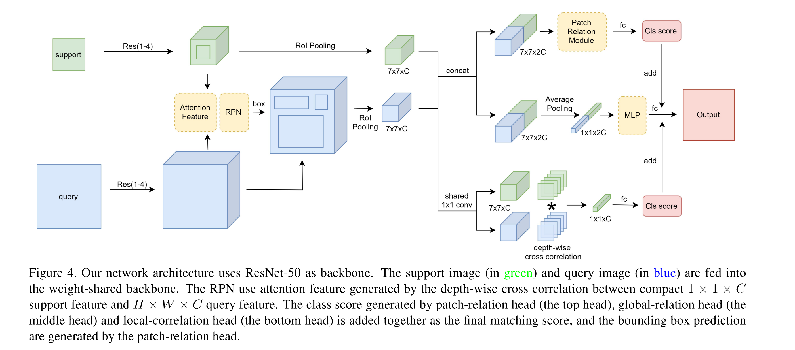

Few-Shot Object Detection with Attention-RPN and Multi-Relation Detector
URL:https://arxiv.org/pdf/1908.01998.pdf
这应该是CVPR2020的论文了, 看完之后我觉得挺失望的。做法上我觉得是完全把用在tracking任务上的siamese网络原封不动的迁移过来了，然后换了一个few shot detection的故事在讲，虽然论文中作者在siamese网络的后面花了不少笔墨写了Patch-Relation Head, Local-Correlation Head, Global-Relation Head 但是注意看Table 3 实际上点上面最大的收益就是siamese网络，加上一堆的trick之后实际上只涨了一个点(68.6% -> 69.8%).

论文所提的网络结构是基于孪生网络来做的，support set和query set分别送入孪生网络的两个分支，两个分支的backbone参数是共享了，两者抽完feature之后会对两个feature做一个相似度计算得到一个新的feature map，这个feature map会送去产生proposal，这一步就是论文里面提到的attention mechanism. 然后就是这两组roi pooling之后feature的交互了，分为三种:
- patch-relation head 两个分支的roi feature concat到一起送入一个子网络出cls + reg
- global-relation head 两个分支的roi feature concat到一起，然后走一个avg pooling 再经过两层FC后出一个score
- local-correlation head 用和孪生网络差不多的cross correlation两个feature 卷一把走fc后又出了一个分
最后的分就是三者之和，reg的结果就用patch-relation head出的结果